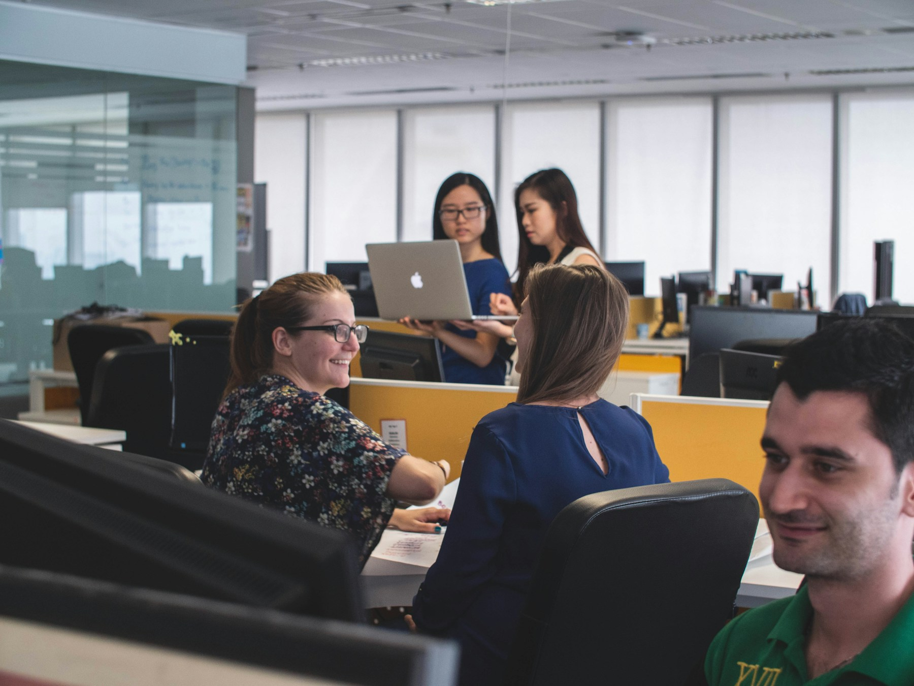

Hồ sơ 02 / Education
Không gian học tập linh hoạt.
Một tình huống điển hình về cách đặt độ bền, kích thước sử dụng và khả năng tổ chức lại vào trung tâm của giải pháp.
Hồ sơ tình huống theo loại hình; hình ảnh mang tính đại diện cho bối cảnh không gian. Không công bố tên khách hàng, địa điểm hoặc số liệu nghiệm thu chưa được xác minh.
Bài toán
Một lớp học phải thích ứng với nhiều hình thức tương tác.
Nội thất cần phục vụ học tập cá nhân, thảo luận nhóm và thay đổi bố cục, nhưng vẫn dễ quản lý, vệ sinh và duy trì trong cường độ sử dụng cao.
- Loại hình
- Trường học & đào tạo
- Phạm vi tình huống
- Lớp học và không gian chung
- Trọng tâm
- Độ bền và tính linh hoạt
- Đầu mối
- Một luồng xác nhận xuyên suốt
Điểm cần kiểm soát
Kích thước phù hợp quan trọng hơn hình thức riêng lẻ.
Chiều cao sử dụng, khoảng cách di chuyển, khả năng xếp lại và bề mặt dễ bảo trì cần được xem xét cùng lúc trước khi chốt cấu hình và số lượng.

Quyết định triển khai
Bốn điểm kiểm soát cho nhịp sử dụng dài hạn.
- 01Xác định người dùng
Đối chiếu độ tuổi, số lượng và hình thức tổ chức lớp để chọn tỷ lệ sử dụng phù hợp.
- 02Kiểm tra linh hoạt
Đánh giá cách di chuyển, ghép nhóm và hoàn trả bố cục sau mỗi hoạt động.
- 03Ưu tiên độ bền
Chọn cấu hình và bề mặt phù hợp với tần suất sử dụng, vệ sinh và bảo trì.
- 04Đồng bộ theo phòng
Xác nhận số lượng, màu sắc và ký hiệu khu vực để giao lắp có trật tự.
Kết quả cần đạt
Không gian dễ tổ chức, dễ quản lý và sẵn sàng sử dụng.
Bố cục hỗ trợ nhiều hình thức học tập mà không làm rối luồng di chuyển.
Kích thước và cấu hình được lựa chọn theo nhóm người dùng.
Bề mặt và kết cấu phù hợp cường độ sử dụng dự kiến.
Khối lượng được phân theo khu vực để thuận lợi cho kiểm tra bàn giao.
Xem thêm hồ sơ khu gặp gỡ và tiếp khách.
Hồ sơ tiếp theo